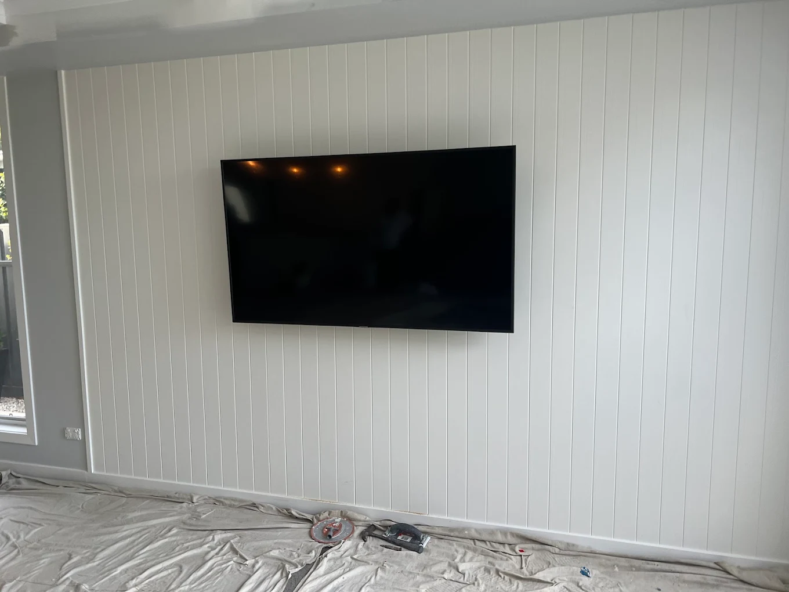
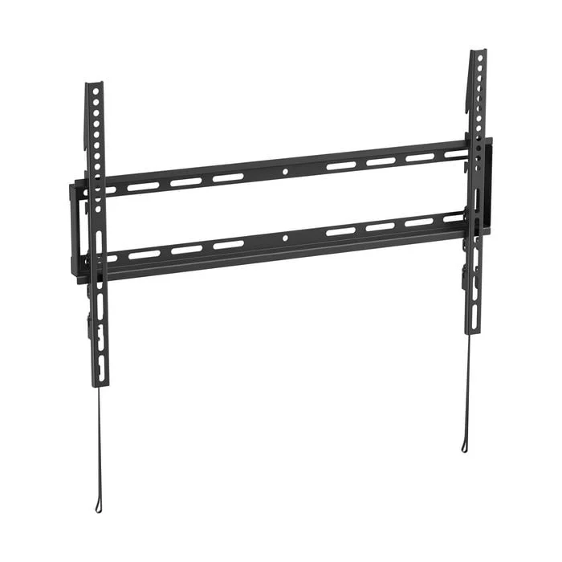
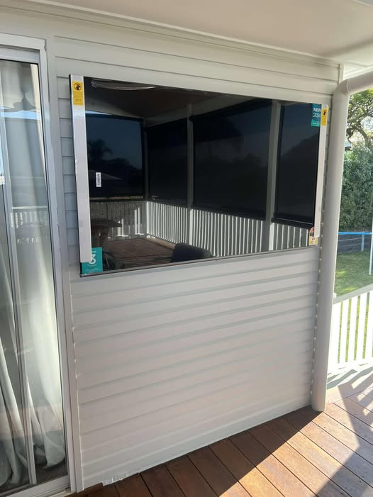

What Height Should You Mount Your TV? The Complete Guide
The ideal TV mounting height depends on your seating position, screen size, and room layout. For most living rooms, the centre of the screen should sit at seated eye level — typically 100–110cm from the floor.
Read More →
Gyprock vs Brick vs VJ Walls: Which Wall Type Do You Have?
Not sure what your walls are made of? Most Brisbane homes have Gyprock on timber studs, but older Queenslanders have VJ panels and some homes feature brick veneer. Here's how to tell and why it matters.
Read More →
Fixed vs Tilt vs Full-Motion TV Brackets: Which One Do You Need?
Choosing the right TV bracket depends on your room layout, viewing angle, and whether you need to swivel the screen. We break down the three main types and when each one makes sense.
Read More →
How to Hide TV Cables in the Wall: The Brisbane Homeowner's Guide
Dangling cables ruin the look of a wall-mounted TV. Learn about in-wall cable concealment, surface-mounted cable channels, and which option works for your wall type.
Read More →
Should You Wall Mount Your Soundbar? Pros, Cons & Installation Tips
A wall-mounted soundbar completes the clean look of a floating TV. Here's how to position it correctly, which mounting methods work best, and whether your soundbar supports wall mounting.
Read More →
Can You Mount a TV Outside? Outdoor TV Installation in Brisbane
Queensland weather makes outdoor entertaining a year-round affair. Here's what you need to know about mounting a TV on your patio, verandah, or outdoor entertainment area.
Read More →